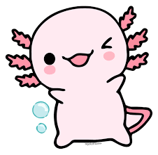
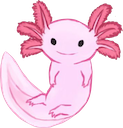

AJOLOTES
CARACTERISTICAS DE AJOLOTES
Cosas que comen los ajolotes
- Microalgas
- Algas
- Lombriz
- Gripita
- Tos

Enfermedades
Mitologia
Hace mucho tiempo, los dioses decidieron reunirse en Teotihuacan para crear el universo ofreciendo su propia vida en sacrificio. Deidades como Huitzilopochtli, Xochipilli y Tezcatlipoca, entre otros, se arrojaron al fuego, sin embargo, uno de ellos no quería hacerlo, pues tenía miedo. Este era Xólotl, el dios perro y gemelo de Quetzalcóatl.
Anatomia
El ajolote posee características de la salamandra, mide en promedio 23 centímetros, su cuerpo es gelatinoso, tiene cuatro patas, una cola larga, ojos pequeños y una boca grande de apariencia sonriente.
Conservacion
La existencia de un ajolote en un espacio natural es indicador de una buena salud del hábitat. Este ser es muy sensible a la calidad del agua, por eso, la restauración de su hogar es muy importante para ayudar a mantener el equilibrio de los ecosistemas. ¡De nosotros depende que el ajolote pueda volver a nadar en zonas libres de contaminación!
Formulario de identificación de axolotes
¿Que edad tiene tu ajolote?